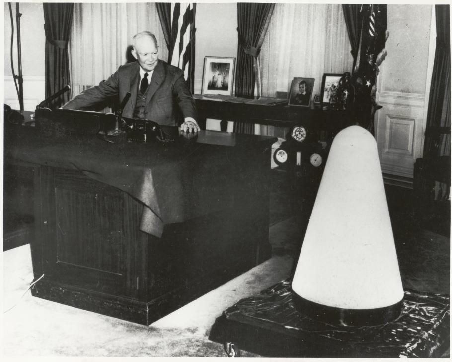
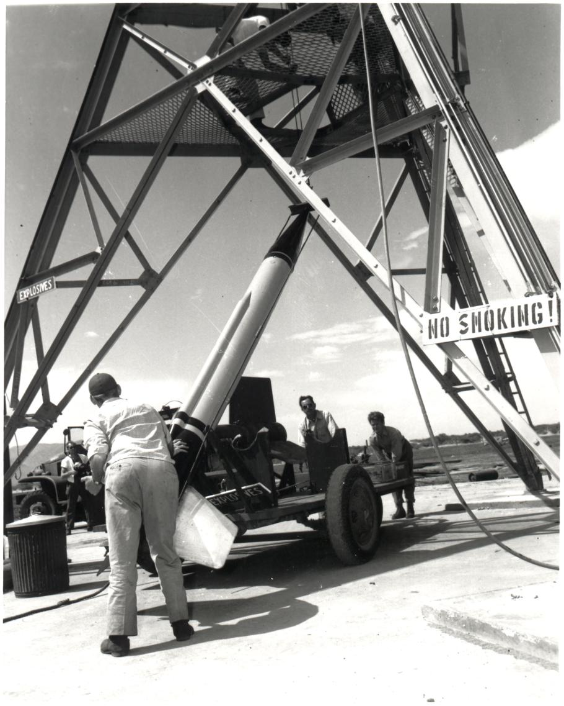
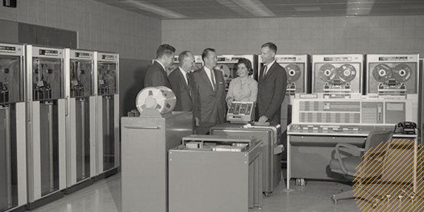

Rocketry and aeronautics were not entirely new fields of technology at the time of the Space Race. Curiously, the earliest usage of rockets dates all the way back to the eleventh century where the Chinese used nitrate-based explosives to propel their fiery arrows through the air. However, the world changed a lot, and more advanced mechanics were needed to fulfill the lofty aspirations of the Space Race.
The most significant development in aeronautics was that of using liquid fuel instead of solid fuel. The idea was first proposed by Russian school teacher Konstantin Tsiolkovsky in 1898, and demonstrated by American physicist, Robert H. Goddard just a few years later. Rockets would be first widely used during World War II as missiles, more specifically the German V-2 missile. Later in the cold war, American and Russian scientists worked to develop more variants of missiles, including the infamous Intercontinental Ballistic Missile (ICBM). As its name implied, it was capable of delivering nuclear payloads across massive distances. As for the Space Race, rocket scientists had to figure out how to repurpose the V-2s and other types of ballistics to carry people instead of explosives. It turned out that missiles and space-faring rockets were not all too different in terms of mechanics, and both sides successfully repurposed many other types of missiles (including the ICBMs) into working rockets and satellites.
Besides rocketry, there were also many other technological innovations during the Space Race. For one, while there were already humanoid “computers” doing flight calculations (refer to the People of the Space Race section for more information), the era also saw the first widespread usage of actual computers. Despite taking up entire rooms, they were able to churn out many calculations in unprecedented time. Eventually, NASA would supply IBM with a couple hundred million dollars for them to come up with a solution to downsize the computers. Another important computing innovation of the Space Race was the ARPANET, a prototypical version of the internet intended to provide a networked solution to research projects around the country. It was completed in the final few years of the Space Race, and continued to be used by other organizations around the continent before getting replaced by the World Wide Web proper near the end of the century. Equally ubiquitous but comparatively less monumental, the mouse device was also created as an easy way to interface with computer screens without having to use the command line for everything.
Some other products that already existed for decades but received more notoriety from their usage by astronauts in the Space Race were Teflon coatings (the material that gives non-stick pans their eponymous property), powdered drink mixes, and Velcro bindings.


